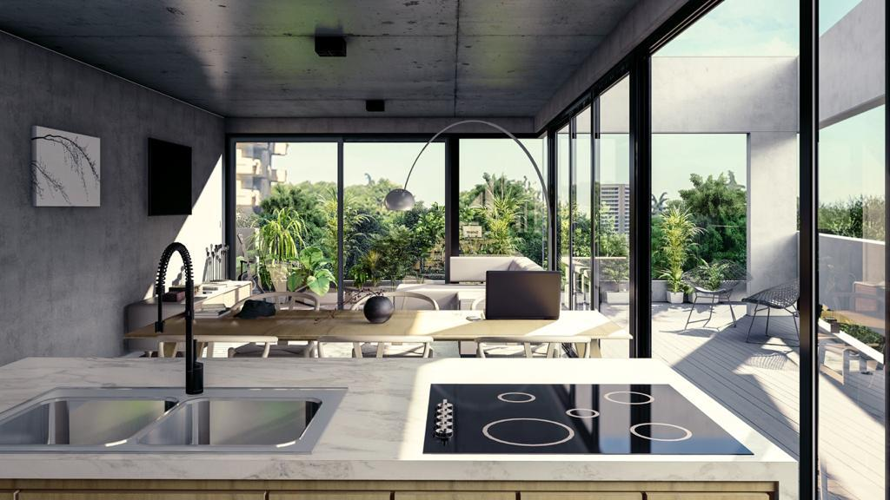
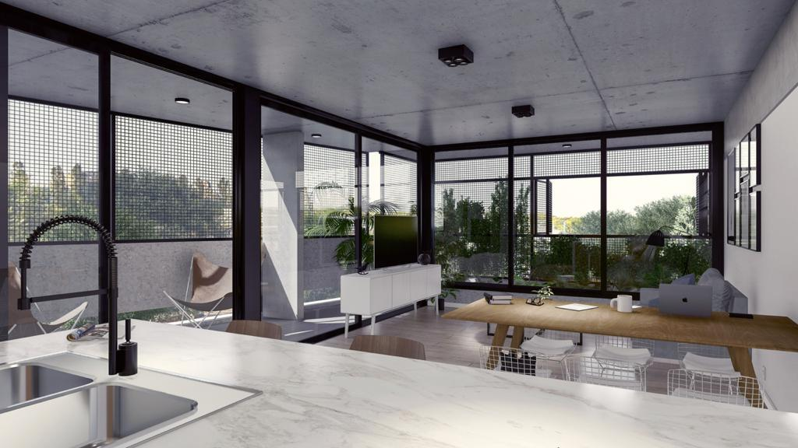
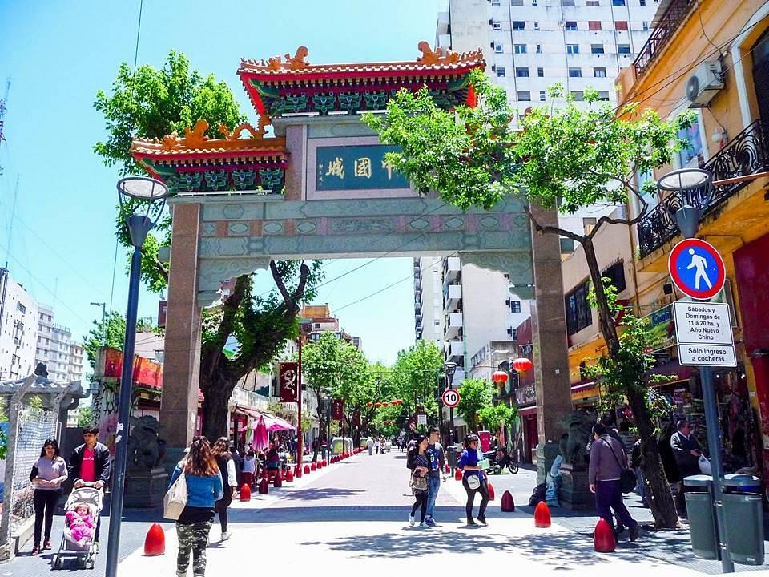
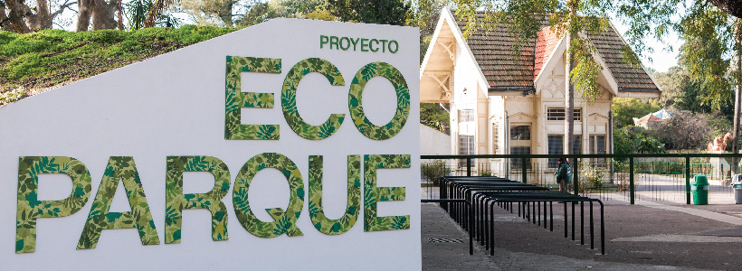

El edificio Alto Vilela es una impresionante obra arquitectónica situada en el encantador barrio de Vilela, en la prestigiosa zona de Núñez, Buenos Aires, Argentina. Construido por nuestra empresa constructora, este edificio representa un hito en diseño y calidad de construcción. Construido a lo largo de un período de 2 años, el edificio Alto Vilela se ha convertido en un ícono en la arquitectura de la zona. Su diseño contemporáneo y su armoniosa integración con el entorno reflejan nuestro compromiso con la estética y la funcionalidad, brindando a sus residentes una experiencia de vida única. La estructura del edificio combina materiales modernos y duraderos, garantizando su solidez y seguridad. Sus amplias ventanas permiten la entrada de luz natural y ofrecen vistas panorámicas de la ciudad, creando espacios luminosos y acogedores en todas las unidades. Alto Vilela cuenta con una distribución inteligente de los espacios, ofreciendo una amplia gama de departamentos de distintos tamaños y distribuciones, adaptándose a las necesidades y preferencias de los residentes. Cada unidad ha sido cuidadosamente diseñada, prestando atención a los detalles y la funcionalidad, para brindar ambientes cómodos y versátiles. Además, se han incorporado comodidades y servicios para el disfrute de los residentes, como una piscina en la azotea con vistas panorámicas, un gimnasio equipado con tecnología de vanguardia, áreas verdes y espacios al aire libre para recreación. También se ha destinado un espacio para estacionamiento subterráneo, garantizando la comodidad y seguridad de los residentes y sus vehículos. El edificio Alto Vilela ha sido concebido para ofrecer un estilo de vida moderno y sofisticado, sin comprometer la calidad de los materiales ni la atención a los detalles. Su ubicación estratégica en Vilela, Núñez, permite un fácil acceso a una amplia gama de servicios, comercios y espacios verdes, brindando una experiencia de vida excepcional. En resumen, el edificio Alto Vilela es un testimonio de nuestro compromiso con la excelencia en la construcción y la satisfacción de nuestros clientes. Su diseño distintivo, su calidad de construcción y su ubicación privilegiada lo convierten en una opción destacada para aquellos que buscan un estilo de vida sofisticado y confortable en la vibrante ciudad de Buenos Aires.
 Nos complace informar que hemos concluido con éxito la obra de vereda y bacheo en el Barrio Chino de Belgrano. Durante el proyecto, llevamos a cabo las siguientes tareas: Inspección y evaluación: Realizamos una exhaustiva inspección de la zona para identificar los tramos de vereda que requerían reparación y los baches existentes que necesitaban ser solucionados. Preparación del terreno: Realizamos las labores de demolición y remoción necesarias para preparar el terreno y asegurar una base sólida y uniforme para las nuevas veredas. Reparación de baches: Utilizamos materiales de alta calidad para reparar los baches existentes, siguiendo los estándares de construcción apropiados para lograr una compactación adecuada y nivelación de las superficies reparadas. Construcción de nuevas veredas: Utilizamos materiales resistentes y de calidad para construir nuevas veredas, garantizando la seguridad y accesibilidad de los peatones. Nos aseguramos de mantener una correcta pendiente para el drenaje pluvial y de instalar adecuadamente los bordillos y otros elementos necesarios. Nos enorgullece el trabajo realizado en esta obra, centrándonos en cumplir con los estándares más altos de calidad y profesionalismo. Esperamos que los residentes y visitantes del Barrio Chino puedan disfrutar de las mejoras en la infraestructura vial y peatonal que hemos llevado a cabo.
Altote SA fue adjudicada para llevar a cabo el proyecto ejecutivo y la obra de la Zona 1B del Ecoparque en la Ciudad de Buenos Aires. El Ecoparque es un espacio que tiene como objetivo principal contribuir a la conservación de la biodiversidad, promover la educación ambiental, fomentar la innovación para el desarrollo sustentable y generar conciencia sobre la importancia del cuidado del medio ambiente. El proyecto se dividió en dos etapas. En la primera etapa, se trabajó en la mejora del bienestar animal, el desarrollo de las bases institucionales y el diseño del Plan General de Transformación del Ecoparque. En la segunda etapa, se llevó a cabo la implementación del Plan General. La obra de la Zona 1B del Ecoparque consistió en la ejecución de la obra civil y las especialidades necesarias para la parquización de dicha área. Los trabajos incluyeron el tendido de una nueva red hidráulica, sanitaria y eléctrica, así como la renovación de especies arbóreas, la ejecución de nuevos solados y la recuperación del Lago Darwin. Altote SA se encargó de llevar adelante la obra, cumpliendo con los requisitos establecidos en el proyecto ejecutivo y siguiendo los lineamientos establecidos por el Ministerio de Ambiente y Espacio Público. La inversión total asignada para esta obra fue de aproximadamente $64.091.596,13. La adjudicación de esta obra a Altote SA se realizó a través de la Licitación Pública No 242/SIGAF/18, mediante la Resolución N° 1486/MAYEPGC/18 del 1° de Octubre de 2018. Con la finalización de esta obra, se ha logrado avanzar en la transformación y mejora del Ecoparque, permitiendo brindar un espacio adecuado para la conservación de la biodiversidad, el desarrollo de actividades educativas y la concientización sobre la importancia de preservar nuestro entorno natural.
